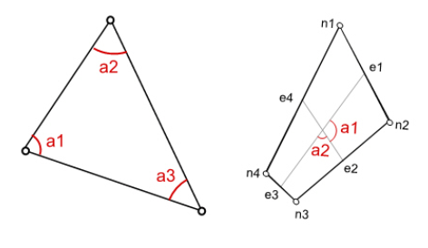
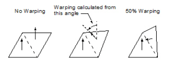
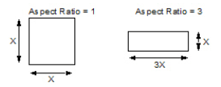
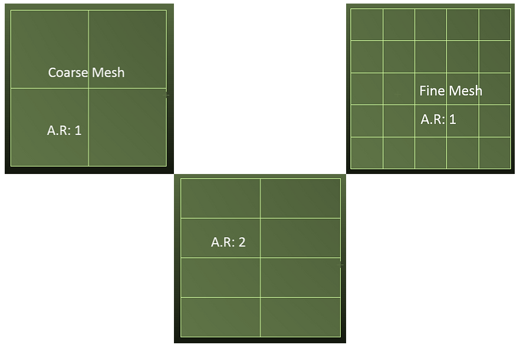
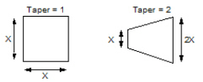
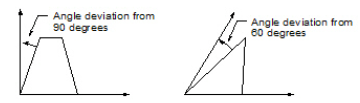
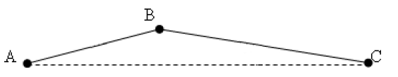
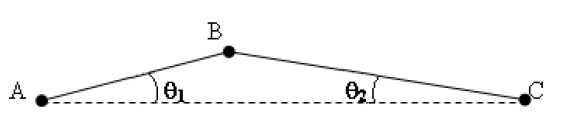

Check Element Quality
To view and report the poor-quality elements created on a mesh body, use the Check Element Quality dialog box (Simulation tab→Mesh group→Check Element Quality command ). The Check Element Quality command is also available from the shortcut menu of the Mesh node in the Simulation tree-view pane.
The element quality checks are available based on element topology. For 2D mesh, the Quadrilateral and Triangular mesh options will be available. Similarly, for tetrahedral mesh, the Tetrahedral mesh options will be available. If there is a mixed mesh, then all the mesh options will be available.
The Limit Check group includes the options:
-
Warning and Error—Shows the number of warning and error element(s) in the model.
-
Error—Shows the number of error element(s) in the model by using set error values for each element check. The error values cannot be modified.
Quadrilateral mesh options
-
Skew
-
Warping
-
Aspect Ratio
-
Taper
-
Minimum Internal Angle
-
Maximum Internal Angle
Triangular mesh options
-
Skew
-
Aspect Ratio
-
Maximum Internal Angle
-
Edge Point Length Ratio
Tetrahedral mesh options
-
Aspect Ratio
-
Jacobian
-
Edge Point Length Ratio
-
Edge Point Included Angle
Skew
The skew measures the internal angular deviation of a face using the edge bisector method. For triangular elements and element faces, skew measures internal angle and reports the minimum for all angles of 2-D (a1, a2, and a3) and all angles of all faces of supported 3D elements. For quadrilateral elements, a skew test for quadrilateral faces reports the minimum angle between face edge bisectors (a1 and a2). The minimum for all faces is reported for supported 3D elements.

- Quadrilateral shell elements
-
The default warning and error value of skew for quadrilateral elements is 50 and 30 respectively. The valid range of warning values is 31 to 360.
- Triangular shell elements
-
The default warning and error value of skew for triangular elements is 20 and 10 respectively. The valid range of warning values is 11 to 360.
Warping
The warping check evaluates the planarity of element faces. All the other checks evaluate parameters within the plane of the element faces, but this check evaluates the out-of-plane parameters. It only looks at the quadrilateral faces. Internally, it divides the quadrilateral face into triangles. If the face is planar, all the triangles should be coplanar. That is, their normals will all point in the same direction. If the face is warped, the normals will not be in the same direction. This check evaluates the maximum angle between the normals and identifies any elements where the angle exceeds the limit you specify.

The default warning and error value of warping for quadrilateral elements is 0.03 and 0.05 respectively. The valid range of warning values is 0.00 to 0.049.
Aspect Ratio
The aspect ratio check is based on the ratio of the length of the longest element edge, to the length of the shortest edge. This check looks at all element edges to find the maximum and minimum lengths. For solid elements, edges along all faces are considered. Only element corners are used. Mid-side nodes of parabolic elements are ignored.


This check identifies elements that have both the longest and the shortest sides.
The default warning and error value of aspect ratio for quadrilateral, triangular, and tetrahedral elements is 50 and 100 respectively. The valid range of warning values is 1 to 99.
Taper
The taper check is similar to the aspect ratio check. It formulates a ratio of the length of the longest edge to the shortest edge. Taper checking only considers ratios of edges that are opposite to each other on a face, whereas aspect ratio checking looks at all edge combinations. For solid elements, all faces are considered but mid-side nodes are ignored.

The default warning and error value of warping for quadrilateral elements is 0.3 and 0.5 respectively. The valid range of warning values is 0 to 0.49.
Internal Angles
The internal angles check evaluates whether the included angles at the corners of an element face deviate from an optimal condition. For quadrilateral faces, the deviation is based on a 90 degree angle. For triangular faces, the deviation is based on a 60 degree angle.

This check identifies elements that are skewed from a square or equilateral triangle. Although similar, taper checking identifies trapezoidal faces, but ignores a face that is a rhombus. The internal angles check finds both variations.
- Quadrilateral shell elements
-
The default warning and error value of IAMin for quadrilateral elements is 50 and 30 respectively. The valid range of warning values is 31 to 360.
The default warning and error value of IAMax for quadrilateral elements is 120 and 150 respectively. The valid range of warning values is 0 to 149.
- Triangular shell elements
-
The default warning and error value of IAMax for triangular elements is 120 and 160 respectively. The valid range of warning values is 0 to 159.
Jacobian
The Jacobian check compares the shape of an element to an ideally shaped element of the same topology. Valid elements produce Jacobian quality values between 0.0 and 1.0, where 0.0 represents the ideally shaped element. Severely distorted elements whose Jacobian determinants are locally discontinuous or undefined are assigned a quality value of 2. If any of the elements have a Jacobian value of 2, the element is not valid (that is, the element is inside out, twisted, and so on) and should be fixed before analysis.
The default warning and error value of Jacobian for tetrahedral elements is 0 and 0 respectively. The valid range of warning values is 0 to 9.99e+30.
The default values of warning and error criteria for Jacobian are same. The warning default value can be changed in the range of 0.0 to 9.9e30. Changing the default value can lead to performance impacts due to an increase in the number of warned elements.
Edge Point Length Ratio (EPLR)
The EPLR check evaluates the location of the mid-side nodes in the mesh. The node should be located approximately at the center on the line connecting two adjacent corner grid points. This determination is made in two ways. First, the distance of the mid-side node from the two corner nodes is measured and checked if the ratio of the distance from one node to the other exceeds the tolerance. Next, the angles between the lines connecting the mid-side node to its two adjacent corner nodes, and the line connecting the corner nodes themselves, are evaluated.

The default warning and error value of EPLR for triangular and tetrahedral elements is 0.8 and 0.5 respectively. The valid range of warning values is 0.51 to 9.99e+30.
Edge Point Included Angle (EPIA)
The EPIA check applies to tetrahedral elements.

The check returns an error if ϴ1+ϴ2>30 degree.
The default warning and error value of EPIA is 20 and 30 degree respectively. The valid range of warning values is 0 to 29.0 degree.
Warning Color
The default color for warning elements is yellow. You can change the color from the color Scheme list on the dialog box or the Simulation page (Solid Edge Options dialog box)
Error Color
The default color for error elements is red. You can change the color from the color Scheme list on the dialog box or the Simulation page (Solid Edge Options dialog box)
Results
Solid Edge displays the number of warning and error elements in the model when you click Show Elements.
-
Mesh quality can be improved using the body mesh option or creating a finer mesh or by applying edge, surface, or body size controls.
-
The internal warning or failed elements may not be displayed if the Generate only Surface results study option is enabled.
Show Elements
Selecting this option highlights and displays the warning and error elements in the model. It also automatically generates the report file containing a summary of error elements under each element check. The default location is C:\Users\<userlogin>\AppData\Local\Temp\.
-
To view the geometry, mesh, and poor-quality elements, we recommend that; you select the Shaded with Visible Edges view style.
-
To view the poor-quality elements only, select the Shaded view style which sets the display to shaded in active window.
Restore Defaults
Resets the values in the Check Element Quality dialog box to their default values.
How do I
Mesh the modelActivity: Use subjective mesh sizing
Activity: Apply a surface mesh to a sheet metal part
Activity: Size the mesh on an edge
Activity: Size the mesh on a surface
Learn more
MeshesMesh sizing
Examining the mesh
Identifying areas of poor mesh quality
Look up more details
Mesh dialog boxMesh Options dialog box
Body Size dialog box
Edge Size dialog box
Surface Size dialog box